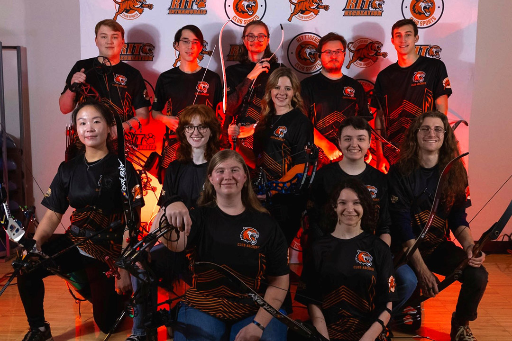

About Straight to the Point Archery
Discover our passion for archery and commitment to safety, skill-building, and community.
Our Mission & Vision
At Straight to the Point Archery, our mission is to make archery accessible, fun, and safe for everyone—from kids to adults. We envision a world where precision and focus through archery empower individuals to achieve their goals, both on and off the range.
Founded in 2010, we've helped thousands hit their targets through expert instruction and top-notch facilities.
Our History
What started as a small community club has grown into a premier archery destination. Key milestones include:
- 2010: Opened our first indoor range.
- 2015: Introduced advanced classes and hosted our first tournament.
- 2023: Expanded to include youth programs and safety certifications.
Our Facilities
Train in our state-of-the-art 50-yard indoor range, equipped with modern bows, targets, and safety gear. We also offer outdoor sessions weather permitting.